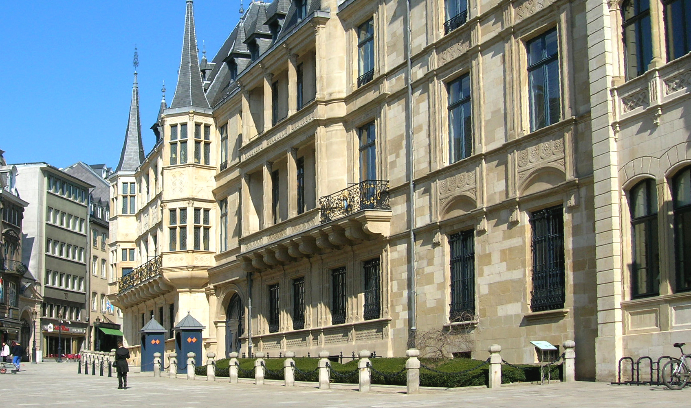
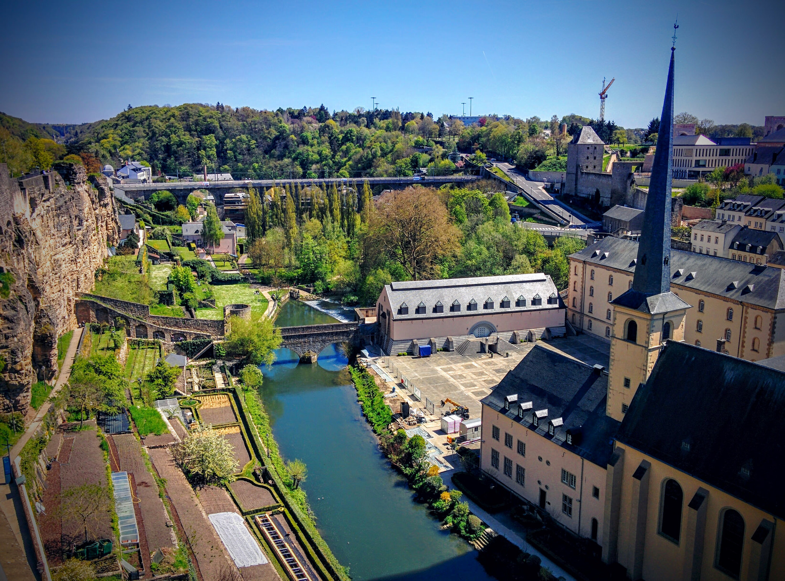
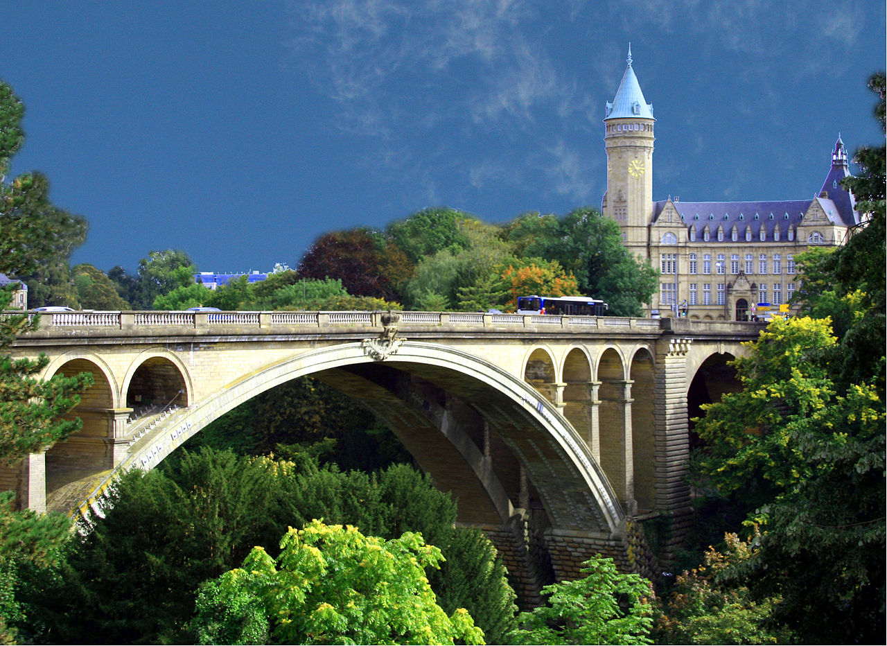
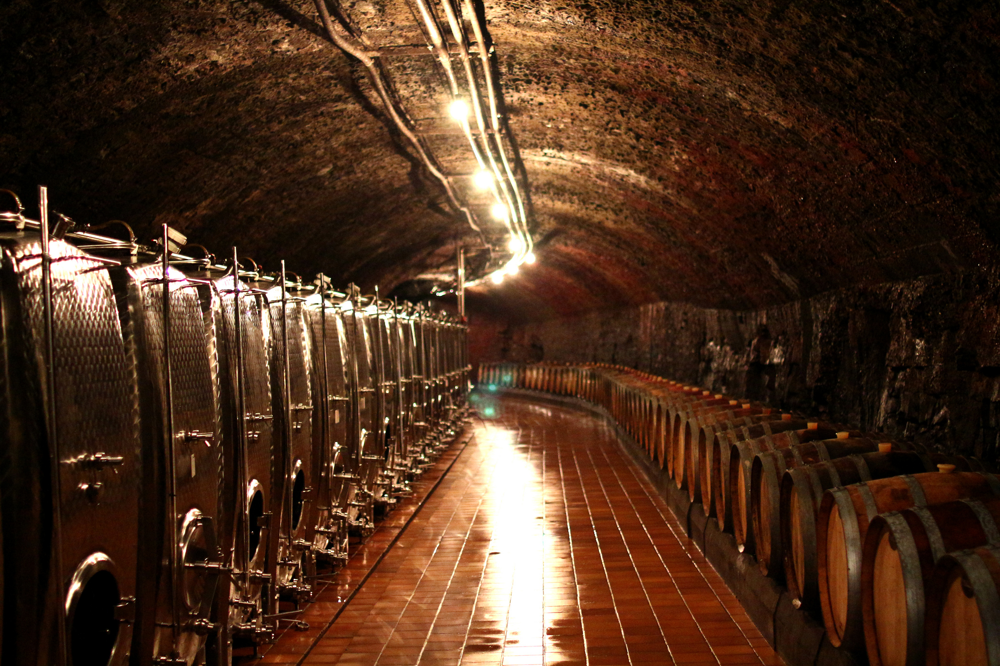
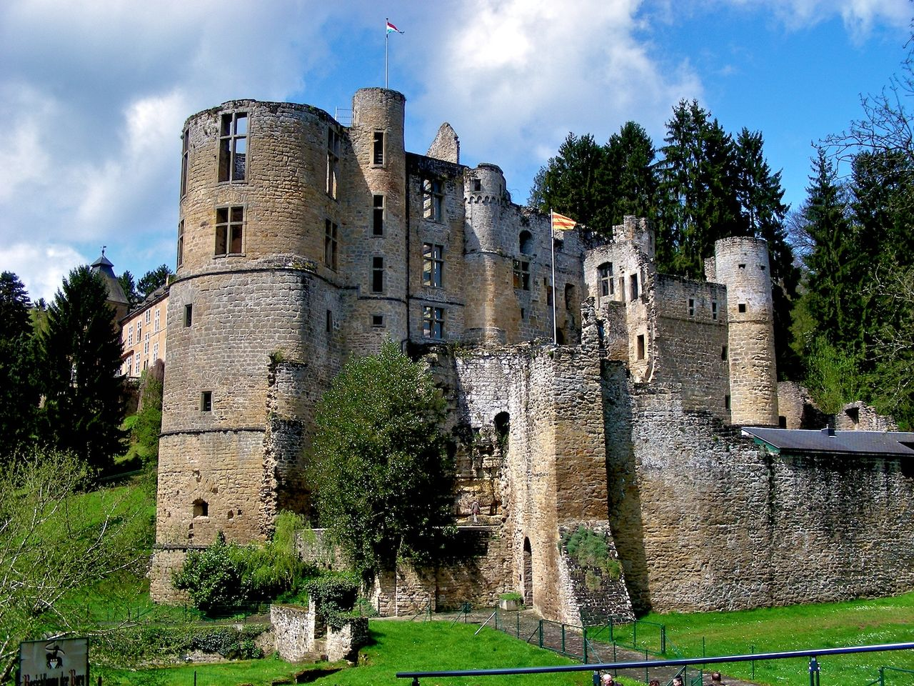
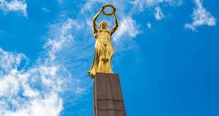
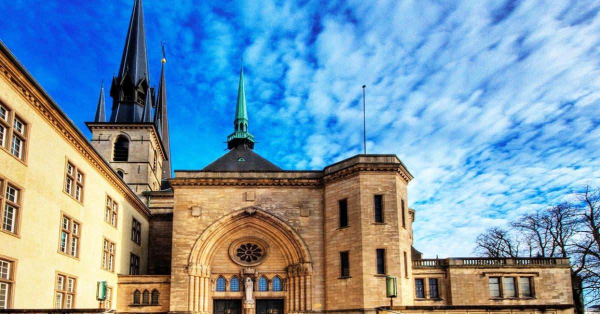

Дворец Великих герцогов в ЛюксембургеДворец Великих герцогов в Люксембурге далеко не сразу стал выполнять почетную миссию резиденции местных монархов. До этого времени, а если быть точнее, то до 1890 г., здание успело послужить и ратушей, и резиденцией французской администрации, и даже местом обитания голландских наместников. |
 |
Казематы БокВ Люксембурге, несмотря на огромное количество помпезных дворцов, мрачных замковых развалин и изящных церквей, одной из главных достопримечательностей с 1933 г. были и остаются казематы Бок. |
 |
Мост Адольфа в ЛюксембургеПожалуй, самый изящный национальный символ, который встречается среди европейских государств — это люксембургский мост Адольфа. Именно его можно увидеть во всевозможных раскиданных по миру парках миниатюр, где за Россию выступает Собор Василия Блаженного, а за Париж — Эйфелева башня. |
 |
Винная тропа ЛюксембургаВинная тропа, пожалуй, самая вкусная достопримечательность Люксембурга, протянувшаяся аж на 42 км вдоль течения реки Мозель. Для многих поклонников немецких вин Мозель уже давно не просто река — а благодатный край, где растет изумительный и терпкий виноград, из которого получается роскошный рислинг. |
 |
Замок Бофор в ЛюксембургеЗамок Бофор — некогда одна из самых мощных крепостей на востоке Люксембурга, сегодня превратившаяся в романтичную и живописную развалину. Надо сказать, развалину достаточно популярную: ежегодно Бофор посещают порядка 100 тыс. туристов. Оно и немудрено — помимо уютно поросших мхом и разнотравьем остатков крепостной стены, здесь также предлагают прогуляться вдоль красивейшего небольшого озерца, заглянуть в ренессансный дворец и попробовать местный черносмородиновый ликер. |
 | Памятник "Золотая фрау" в Люксембурге«Золотая фрау», расположенная в центре столицы изящная леди, которую водрузили на гранитный 21-метровый обелиск. Мемориал появился здесь незадолго после Первой мировой войны в память о погибших люксембуржцах, что храбро боролись за свободу и независимость своей крошечной страны в рядах французских войск. |
 |
Собор Люксембургской БогоматериУдивительный по красоте и изящности позднеготический храм с элементами ренессансного стиля — редкий для Люксембурга, да и для всей Европы образец религиозной архитектуры, сочетающий сразу две исторические вехи. |
 |